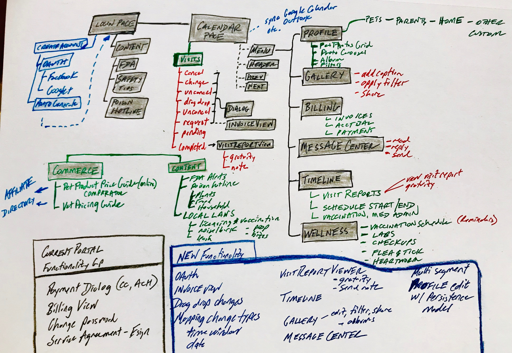

LEASHTIME - PET PARENT PORTAL PROJECT PLAN
Model-View Mgmt
Server shadow persistence state management for incomplete Profile updates
- Incremental updates of profile request fields
- Check for pending profile request fields and include in Network response
Client shadow persistence state management
- Alert notification for unsubmitted profiles
- Edit and save to persistence model for each individual field
Calculate comprehensive invoice amount due for requested schedules
- Apply surcharge policies
- Calculate taxes
- Apply discount policies
Visit Card Persistence
- Local storage of previous visit requests
- User interaction design mechanism to two-click request new visit using information from previous visit requests
Views

Calendar View

- Monthly, Weekly
- Color code to reflect visit states
- Drag and drop change request
- Display Surcharge Dates
Schedule Request

- Single visit
- Multiple visits
- Multiple, variation visits
Cancel Request
Change Visit [adding new types]
Profile Edit View
- Tabbed interface by logical categories (Pets, Parents, Home, Other Info)
- Single field edit and save
Visit Report
Pet Photo Gallery
- Grid view
- Enlarged carousel view
- Enter caption
Profile Editor
- Tabbed sections
- Add new Pet Profile
- Upload profile image
Networking
NEW API endpoints
- Cancel visit(s)
- Uncancel visit(s)
- Request schedule visit(s)
- Change (visits)
- Get Pet Parent Profile
- Send profile update changes
- Get visit report
- Send gratuity
Modifications to current API endpoints
- Pending request parse
- Visit report link info
Server
Translate API endpoint requests to Request Queue items
- Multi-visit cancel within single request item
- Change request automated approval
Manage Profile update persistence model
- Track shadow state for incomplete profile submissions
- Append network API endpoint